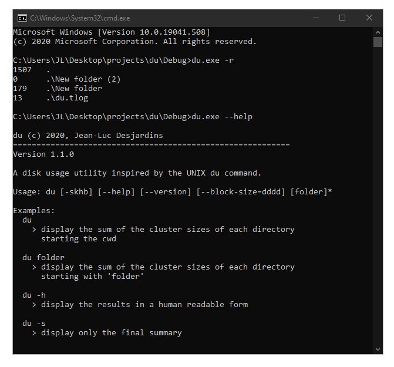

Inspired by all the researchers trying to create a vaccine for Corona. Codon Analyzer takes in a nucleotide sequence
and returns a table with the types, counts, and percentages of each codon type found followed by a list of the types, counts,
and percentages of each amino acid type found. This C++ project is my answer to the GATS programming challenge. For more info
on the challenge visit GATS.

This is a student loan calculator. The Java app shows how modifying repayment schedules would affect the loan cost in terms of the amount of interest that the student would pay.
An object-orientated approach was taken to build this project. Student Loan Calculator incorporates classes and interfaces as well as some exception handling. It was my first GUI using javax.swing and
helped reinforce oop concepts.

A command line application built in C that reads number pairs from a file or from the keyboard then calculates minimum value, maximum value,
median value, arithmetic mean, mean absolute deviation – (mean, median, mode),
variance (of a discrete random variable), standard deviation (of a finite population),
mode, least squares regression line and outliers(2x and 3x). This project taught me about dynamic memory management and memory leaks.

Disk Utlity is a console application written in C++ that shows disk usage(based on the UNIX command). It can correctly count multiple folders(with subfolders). This project taught me about recursive directory iterators.